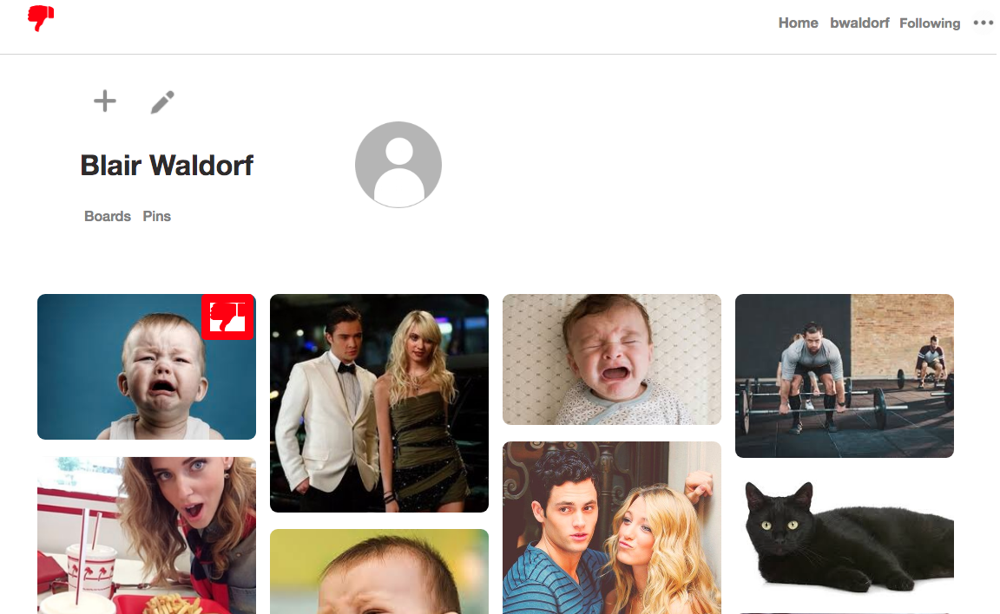

Pinthefail
Implemented custom back and front end user authentication, using BCrypt on the back end and custom modals on the front end, allowing logins to persist across sessions and refreshes. Integrated remote storage for user-uploaded photos on AWS S3, bolstering both speed and scalability while maintaining a secure environment. Harnessed the capability of jBuilder to render JSON data for API requests, facilitating the user’s ability to affix pins to boards. Utilised CSS flexbox, as well as a masonry-style grid layout, to aesthetically organize pins and boards and prioritize . Deconstructed code by componentization, and used modular components for forms, allowing for DRY and maintainable code.